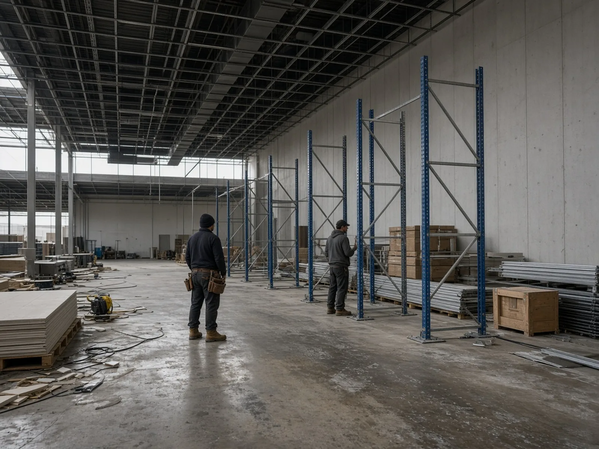

Built on trust.Connected by purpose.
Family owned, relationship focused and built around commercial properties. IVO connects people, practical scope information and clear communication, with technology supporting the relationship.
A personal relationship, supported by a better system.
IVO Group brings a practical commercial-property focus to the relationship between customers, independent businesses and the people coordinating the next step. Our purpose is to make that relationship easier to understand, easier to organize and easier to continue as a property’s needs change.
People remain responsible
A portal can organize information, but it cannot replace a clear conversation or ownership of the next action. IVO’s team reviews the requirement, identifies open questions and keeps the applicable participants connected. Technology supports that responsibility by keeping records visible to the people who need them.
The scope stays understandable
A customer should be able to identify what is being considered, what has been agreed and where a decision is still needed. Participating contractors and vendors need the same clarity around their own responsibilities. That shared understanding is the foundation for a useful commercial relationship.
The relationship can develop
You may begin with one repair, one improvement or one defined package alongside people you already trust. As other requirements arise, the existing relationship provides a familiar place to start. Each new assignment still deserves its own review, scope and authorization.
What “one call, every solution” means to us.
It expresses a convenient starting point for different commercial property needs. It is a commitment to understand the requirement and discuss the appropriate path—not a promise that every possible task, location or timeframe can be accepted without review.
- Listen to the property requirement and the people affected.
- Organize the right information, responsibilities and next decisions.
- Follow through with communication and a clear record of the assignment.
Values
in practice.
A company shaped around commercial properties.
IVO Group is a family-owned commercial construction and property-services company. We focus on the people responsible for commercial spaces: property owners and managers, tenants, facility teams and the businesses supporting a defined project. Their requirements can change over time, but the need for clear communication and dependable follow-through remains.
The same property can need an improvement before a tenant moves in, a repair during normal operations and a different kind of support when an unexpected condition occurs. IVO’s four service paths provide a practical way to begin those conversations without requiring the customer to know every trade involved.
Our aim is to become a useful commercial resource alongside the relationships a customer already has. The starting point may be a single requirement, a limited scope or a gap in the current team. We listen to that need, discuss where the relationship fits and keep the actual responsibilities clear.
Discuss this requirement →Faith, stewardship and practical responsibility.
Our values begin with the way people are treated and the care given to the property and the assignment. Faith and stewardship guide a straightforward expectation: be thoughtful about the customer’s resources, communicate honestly about the requirement and take responsibility for the next agreed action.
That approach matters in ordinary details. Identify what is included in a proposed scope. Explain when a question still needs an answer. Keep the relevant contact informed when a condition changes. Bring an outstanding item to a clear decision rather than allowing it to disappear between separate conversations.
We want a customer or partner to understand how the relationship works, not simply recognize a service name. The quality of that understanding shapes the way a request is reviewed, how an assignment is organized and whether the next commercial need leads to another useful conversation.
Discuss this requirement →Find the details
you need.
Practical notes on what to send, how the work is organized and how decisions are recorded.
Our operating approach
Begin with the property objective, the actual conditions and the people who can make decisions. A commercial requirement may involve ownership, a tenant, a project team and several independent businesses. Clarifying those roles helps the proposed scope develop with a shared reference point.
The work plan should identify relevant information, responsibilities and outstanding questions. Materials, access, timing and completion expectations are discussed in relation to the actual assignment. Any proposed change needs to be understood against that agreed basis rather than treated as automatically included.
Technology with a practical purpose
IVO software keeps requests, partner profiles, reviewed opportunities, bids and project information organized around the relevant account and assignment. Customers can follow their submissions, participating businesses can maintain the information relevant to their relationship, and authorized team members can coordinate the next action.
Different records need different access. A shared scope photograph serves a different purpose from a contractor’s tax form or payout instructions. Project communication and secure business onboarding therefore use separate workflows, with individual accounts and permissions instead of one shared login or an unrestricted document folder.
01A relationship with independent businesses
Contractors, service providers and vendors bring different capabilities to a commercial requirement. We ask businesses to describe what they actually do, where they can support work and which qualifications or limitations apply. That information helps the team consider an appropriate fit for a specific requirement.
An introduction, application, quote and assignment are distinct stages. Their corresponding reviews and agreements establish the actual relationship. A useful partnership is built on an understood scope, accurate business information and a clear account of who is responsible for each part of the work.
02What professional follow-through looks like
A finished visit is not always the same as a finished assignment. The relevant parties may still need to review a punch item, clarify a changed condition or organize the documents that explain the result. Those items should have an identifiable owner and a next step.
IVO’s purpose is to support a continuing commercial relationship through those practical details. A clear record helps the customer understand what was addressed, helps participating businesses understand their own responsibilities and gives the next conversation a more useful starting point.
Get to know IVO.
Still have a question? Call (206) 539-9549 or email office@ivoservgroup.com.
What kind of company is IVO Group?
IVO Group is a family-owned commercial construction and property-services business serving the relationships around commercial spaces. Its service paths cover construction, property services, emergency property response and specialty requirements, with the actual role and agreement confirmed for each assignment.
What does the technology add to the relationship?
IVO’s software provides individual accounts, request and partner records, reviewed opportunities and bids, project updates, documents, onboarding and team tools. Shared project information and restricted business paperwork have separate access rules. The platform supports human review rather than replacing it with an automated promise.
Do we need to move all of our work to IVO?
No. A defined need or a gap in your current resources can be the starting point. Explain how your existing team works and where an additional resource could be useful; the relationship does not require replacing every contractor or vendor you already use.
Do you focus on a single type of commercial building?
The site describes retail, office, multi-tenant, warehouse and other commercial environments. The specific requirement, location, available resources and qualifications determine the appropriate conversation; a building category alone does not establish a confirmed service scope.
How do we explain our organization’s procurement process?
Include work-order references, vendor requirements, purchase-order instructions, bid deadlines and the person authorized to clarify or approve the request. Keep private entry codes and sensitive business paperwork out of shared opportunity descriptions.
Can we start with one location before discussing a wider relationship?
Yes. A defined requirement gives both parties a practical starting point. Explain any wider portfolio needs, but keep the initial scope and its authorizations distinct from work that may be considered later.
Built around
commercial properties.
Commercial property support shaped around your environment: occupied offices, retail spaces, warehouses and multi-tenant properties. The way your site operates is part of how the work should be planned.
The same trade can require a very different plan.
A repair in a retail store, a change inside a warehouse and an improvement to an office suite may call for similar skills but very different working arrangements. IVO considers the environment, the people involved and the organization’s approval process alongside the physical scope.
Property managers & ownership
Clarify whether the requirement concerns landlord space, a tenant-controlled area or a shared component. For portfolios, identify the location-level contacts and the central decision makers. Your purchasing, reporting and vendor-onboarding procedures are part of how the relationship needs to work.
Business occupants & facility teams
Explain how the proposed work interacts with customers, employees, equipment and daily operations. The importance of a work window is easier to understand when the team knows what happens in the affected area and what needs to remain available throughout the assignment.
General contractors & procurement teams
State the requested participation, the procurement stage and the documents against which a response is expected. Defined interfaces and clear scope boundaries help an additional business fit into an existing delivery team without confusing overall responsibility.
A multi-tenant property has several decision makers.
An illustrative requirement: ownership controls a shared area, a property manager organizes access and a tenant has an operating deadline. Identifying those roles at the beginning keeps a service request from becoming a chain of messages in which nobody knows who can approve the next step.
- Identify the property, affected area and responsible organization.
- Record operating restrictions and approval responsibilities.
- Keep relevant participants informed through the correct workspace.
Shaped around
your organization.

01 / Who we serveProperty & tenant teams
Commercial property owners, managers, asset teams and tenants can bring repairs, turnovers, improvements and changing space requirements through one IVO relationship.
The people responsible for a commercial property do not all manage work in the same way. An owner may focus on the long-term condition of the asset, a property manager on multiple tenant requests, and a business occupant on keeping its space usable. Identifying the decision maker helps shape communication and approvals.
Tell IVO whether your need concerns one location or a portfolio, and how your organization handles work orders, purchase orders and vendor onboarding. The service path should fit both the physical requirement and the process your team uses to authorize it.
Discuss this requirement →Operating commercial spaces
The property condition and its daily use help shape the scope. Identify tenant activity, public access, facility operations and scheduling restrictions when submitting the request.
Commercial work often takes place around customers, staff, deliveries and neighboring occupants. A clear description of those activities helps explain why a particular work window, sequence or access arrangement matters. The same physical repair can require a different plan in a busy retail space than in an unoccupied suite.
Discuss any building rules, facility procedures or communications that must be coordinated with the property team. Site-specific restrictions should be identified early enough to be considered in the scope and schedule.
Discuss this requirement →Find the details
you need.
Practical notes on what to send, how the work is organized and how decisions are recorded.
Retail & shopping centers
Typical requirements involve tenant spaces, storefront conditions, common areas, finishes and property improvements. Customer access and operating hours are relevant planning details.
Retail environments can combine storefront concerns, tenant improvements and common-area requirements. Identify whether the work affects a tenant-controlled area, landlord-controlled space or both. Note public access, merchandise protection and the relationship between the work area and nearby entrances or neighboring businesses.
Office & multi-tenant properties
Scopes may include tenant improvements, interior finishes, turnovers, doors, repairs and shared-area requirements. Identify which spaces and stakeholders are affected.
Office properties may involve tenant-specific standards, shared corridors and several layers of approval. Explain who represents the tenant, who represents ownership and which areas are included. For turnovers or phased improvements, identify the intended handover condition and any move-in dates that influence priorities.
01Warehouse & industrial
Repairs, physical modifications and commercial adaptations should be reviewed around facility operations, access, existing conditions and the defined project objective.
Warehouse and industrial requests should describe traffic routes, loading areas, equipment use and any restrictions around the proposed work area. Identify the operating contact who can clarify those conditions. A modification should be considered in relation to the facility’s actual use, rather than only the dimensions of the affected component.
02General contractors & project teams
Submit defined trade scopes, plans, specifications and bid deadlines. Include procurement requirements, site-visit details and the boundaries of the requested support.
Project teams may need a defined trade package, supplemental capacity or support within an established delivery plan. State the procurement stage, drawing issue, requested exclusions and interfaces with other trades. Describe any prequalification, site-visit or reporting requirements so the requested participation is understood before a proposal is prepared.
Four states.
One standard.
We support commercial properties across the West Coast and Inland Northwest, from local work orders to projects that need a traveling crew.
We serve major metro areas and surrounding communities across Washington, Oregon, Idaho, and Northern California. Share your project location and scope so IVO can confirm availability for your property and the services you need.
Washington, Oregon,
Idaho and Northern California.
Washington
Puget Sound, Southwest & Eastern Washington
Oregon
Portland metro, Willamette Valley & Central Oregon
Idaho
Treasure Valley & North Idaho
Northern California
Sacramento region, Bay Area & the north state
Outside these areas, or a multi-site portfolio? Tell us the locations and we'll confirm coverage before you commit.
Areas
we serve.
Washington
Seattle, Bellevue, Tacoma, Kent, Everett, Spokane, Vancouver, Olympia, Bellingham, Yakima, and the Tri-Cities, and surrounding areas.
Oregon
Portland, Beaverton, Hillsboro, Salem, Eugene, Bend, Medford, and Corvallis, and surrounding areas.
Idaho
Boise, Meridian, Nampa, Caldwell, Coeur d’Alene, Twin Falls, Idaho Falls, and Pocatello, and surrounding areas.
Northern California
Sacramento, San Francisco, Oakland, San Jose, Santa Rosa, Stockton, and Modesto, and surrounding areas.
Start with one project.
Let us earn the next one.
Tell us what the property needs. We’ll help identify the appropriate next step.